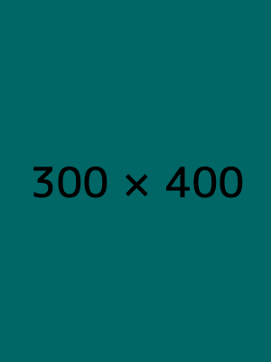

Your Event's Weather
We'll check the weather for
YOU
!
☰Menu
Home
Preston
Soda Springs
Fish Haven
Storm Center
Gallery
Gallery

Bamboo Forest
Black Eyed Susans
Bluebells
Trees & Sunset
Icy Forest
The Superstition Mountains
Pink & Yellow Tulips
Small Mountain Waterfall
Yellow Beetle on a Flower